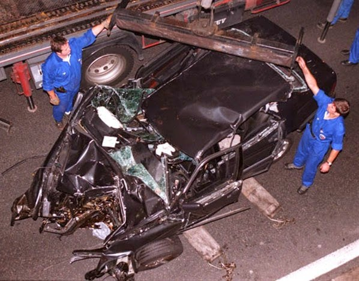
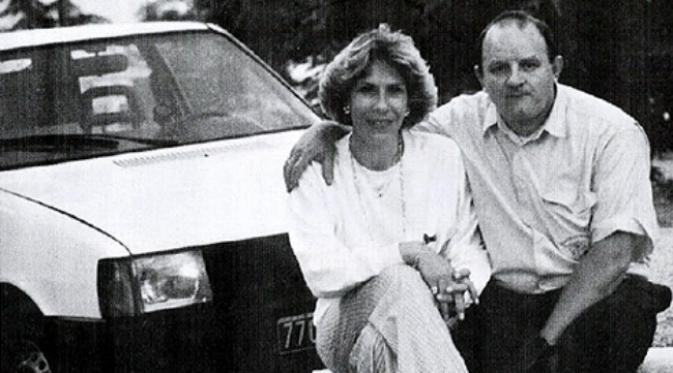

Princess Diana adalah istri pertama dari Charles, Prince of Wales, seorang anggota Keluarga Kerajaan Inggris yang ia nikahi pada tanggal 29 Juli 1981. Diana terkenal karena penggalangan dana bagi badan amal internasionalnya dan menjadi selebriti terkemuka di abad ke-20 akhir. Pernikahannya dengan Charles, pewaris tahta Inggris dan satu dari 18 Commonwealth realms diadakan di Katedral St Paul dan dilihat oleh pemirsa televisi global lebih dari 750 juta. Saat menikah ia sudah memegang gelar kebangsawanan Princess of Wales, Duchess of Cornwall, Duchess of Rothesay, Countess of Chester dan Baroness of Renfrew. Perkawinannya menghasilkan dua putra, para pangeran William dan Harry. • Putri Diana adalah legenda. Perjalanan hidupnya mirip dongeng yang sayangnya tak berakhir bahagia. Melupakan latar belakangnya sebagai lady atau bangsawan yang tinggal di istana besar di Althorp -- dalam imaji banyak orang -- Diana adalah seorang guru taman kanak-kanak yang berhasil memikat hati calon raja Inggris, Pangeran Charles. Tatapannya yang malu-malu, parasnya yang menawan, selera busananya yang bagus, dan aktif dalam kegiatan sosial, Putri Diana berhasil membangkitkan cinta banyak orang, meski ia tak bisa merengkuh hati sang suami yang selingkuh nyaris di sepanjang usia pernikahan mereka.
Ramalan Kematian Putri Diana
Pada Oktober 1996, Putri Diana sempat menuliskan surat kepada seorang sahabatnya, Paul Burrell. Dalam petikan tulisannya, ia mengaku berada dalam bahaya."Charles merencanakan kecelakaan mobilku, kegagalan rem dan cedera kepala serius. Untuk memberikannya jalan agar Charles bisa menikah lagi," demikian petikan surat Diana yang tersebar di banyak media kala itu.Dalam surat yang ditulis sepuluh bulan sebelum kematiannya, Diana juga berpesan supaya surat itu disimpan sebagai jaminan di masa depan.Ramalan tentang kematiannya pun disebut-sebut menjadi kenyataan. Putri Diana dan kekasihnya Dodi Al Fayed tewas pada 31 Agustus 1997. Ramalan itu dikuak dalam film dokumenter, 'Unlawful Killing'. Sebuah film yang ingin menyampaikan pesan bahwa kematian Diana tak wajar. Ia dibunuh.Film itu jadi kontroversi karena menayangkan foto hitam-putih Lady Di yang diambil beberapa saat setelah mobil Mercedes yang membawanya menabrak sisi pembatas dalam terowongan. Meski tak berwarna, foto menyedihkan Diana yang sedang meregang nyawa memperlihatkan dengan jelas rambut pirangnya.
Misteri Fiat Uno di Tempat Kecelakaan
James Andanson adalah seorang juru foto yang setia menguntit Putri Diana dan kekasihnya, Dodi al Fayed, sejak beberapa minggu sebelum pasangan itu meninggal dunia dalam kecelakaan maut di Paris, Prancis.Andanson bahkan diduga berada di Sardinia ketika pasangan kekasih kali pertama berlibur berdua pada minggu terakhir Agustus 1997. Seperti dikutip dari Express, jurnalis yang berusia 54 tahun kala itu adalah satu dari 10 saksi kunci dalam misteri terkait kecelakaan maut Putri Diana.Ada dugaan bahwa Andanson mengemudikan Fiat Uno berwarna putih, yang membuntuti Mercedes Benz hitam yang ditumpangi Putri Diana dan kekasihnya.Fiat Uno itu juga diduga sempat menyerempet mobil yang membawa Diana. Awalnya keterlibatan kendaraan tersebut diabaikan, namun terdapat bekas cat mobil Fiat dalam Mercedes maut yang dinaiki Diana serta sejumlah serpihan kaca lampu belakang milik Fiat Uno di gerbang masuk terowongan.Sejumlah orang menduga terjadi tabrakan antara Mercedes yang ditumpangi Diana dengan Fiat Uno sehingga membuat Henri Paul kehilangan kendalinya. Beberapa orang mempertanyakan apakah pengemudi Fiat Uno sengaja mencelakai mobil yang dinaiki Diana. Kecurigaan pun bertambah ketika Fiat Uno tak pernah ditemukan meskipun telah dilakukan pencarian.
Beberapa pencetus teori konspirasi mengatakan, mobil itu merupakan millik mantan agen MI6 James Andanson -- yang secara resmi dinyatakan tak terlibat dalam kecelakaan maut Diana.Pada Mei 2000, jasad Andanson ditemukan di sedan BMW berwarna hitam di Montpellier, kawasan pedesaan di Prancis selatan.Mobil mewah itu tak bersisa, binasa oleh api. Di dalamnya, ditemukan jasad seorang manusia. Tubuhnya hangus parah, tak ada lagi yang tersisa agar identitasnya bisa dikenali.Siapa gerangan korban baru diketahui sebulan kemudian, melalui uji DNA dan catatan gigi.Christophe Pelat menduga Andanson melakukan upaya bunuh diri. Namun, kemudian ia berubah pikiran. "Saya melihatnya dari dekat dan sangat yakin bahwa ia telah ditembak dua kali di kepalanya." Menurut Pelat, jurnalis itu tewas tak wajar.